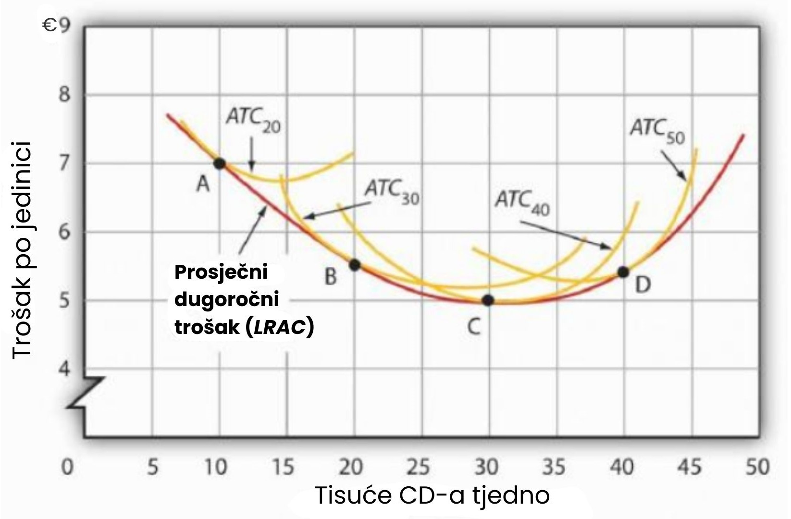
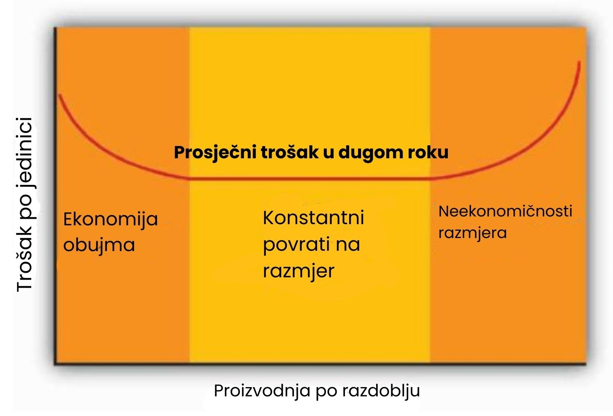

Dugoročno razdoblje
Iz perspektive dugoročnog planiranja, poduzeće može razmotriti promjenu količina svih svojih proizvodnih faktora. To mu pruža prilike koje nema u kratkom roku. Prvo, poduzeće može odabrati kombinaciju faktora koje želi koristiti. Treba li odabrati proizvodni proces s puno rada i malo kapitala, poput čistača ulica u Kini? Ili bi trebalo odabrati proces koji koristi puno kapitala i relativno malo rada, poput čistača ulica u Sjedinjenim Američkim Državama?
Druga stvar koju poduzeće može odabrati je razmjer (ili ukupna veličina) svojih operacija. U kratkom roku poduzeće može povećati proizvodnju samo povećanjem korištenja varijabilnog faktora. No, u dugom roku svi faktori su varijabilni, pa poduzeće može povećati korištenje svih svojih proizvodnih faktora. Pitanje s kojim se poduzeće suočava u dugom roku jest: Koliko bi trebalo proširiti ili smanjiti razmjer svojih operacija? Alternativno, može odlučiti zatvoriti poslovanje.
U svom dugoročnom planiranju, poduzeće ne samo da smatra sve faktore varijabilnima, već smatra i sve troškove varijabilnima. U dugom roku nema fiksnih troškova. Budući da su svi troškovi varijabilni, struktura troškova u dugom roku nešto se razlikuje od one koju smo vidjeli u kratkom roku.
Odabir kombinacije faktora
Kako bi poduzeće trebalo odlučiti koju kombinaciju kapitala, rada i drugih faktora koristiti? Možemo primijeniti pravilo marginalne odluke kako bismo odgovorili na to pitanje.
Pretpostavimo da poduzeće koristi kapital i rad za proizvodnju određenog dobra. Mora odrediti kako proizvesti to dobro i koju količinu treba proizvesti. Pitanje koliko bi poduzeće trebalo proizvesti razmatrat ćemo u kasnijim poglavljima, ali svakako će poduzeće htjeti proizvesti bilo koju odabranu količinu po najnižem mogućem trošku. Drugi način izražavanja tog cilja je da poduzeće nastoji postići maksimalnu moguću proizvodnju na svakoj razini ukupnog troška.
Na svakoj razini ukupnog troška, poduzeće može mijenjati svoju kombinaciju faktora. Moglo bi, na primjer, zamijeniti rad kapitalom na način koji ne mijenja ukupni trošak. U smislu pravila marginalne odluke, možemo zamisliti da poduzeće razmatra hoće li potrošiti dodatni euro na jedan faktor, a time euro manje na drugi. Pravilo marginalne odluke kaže da će poduzeće mijenjati raspodjelu troškova među faktorima sve dok je marginalna korist od te promjene veća od marginalnog troška.
Koja je marginalna korist, recimo, dodatnog 1 eura potrošenog na kapital? Dodatna jedinica kapitala proizvodi marginalni proizvod kapitala. Kako bismo odredili marginalnu korist eura potrošenog na kapital, dijelimo marginalni proizvod kapitala s njegovom cijenom: MPK/PK. Cijena kapitala je „najamnina“ plaćena za korištenje jedinice kapitala u određenom razdoblju. Ako poduzeće već posjeduje kapital, tada je ta najamnina oportunitetni trošak; predstavlja povrat koji bi poduzeće moglo ostvariti iznajmljivanjem kapitala drugome korisniku ili prodajom i ulaganjem novca uz kamatu.
Ako su kapital i rad jedini faktori, tada dodatni 1€ potrošen na kapital, uz uvjet nepromijenjenog ukupnog troška, znači oduzimanje 1€ iz rada. Trošak te radnje bit će proizvodnja izgubljena smanjenjem rada za 1€. Taj trošak jednak je omjeru marginalnog proizvoda rada i cijene rada, MPL/PL, gdje je cijena rada plaća.
Pretpostavimo da je marginalni proizvod rada u poduzeću 15, a cijena rada 5 eura po jedinici; poduzeće dobiva 3 jedinice proizvodnje potrošnjom dodatnog eura na rad. Nadalje, pretpostavimo da je marginalni proizvod kapitala 50, a cijena kapitala 50 eura po jedinici, pa bi poduzeće izgubilo 1 jedinicu proizvodnje ako potroši 1€ manje na kapital.
Poduzeće ostvaruje neto dobitak od 2 jedinice proizvodnje, bez ikakve promjene u trošku, prebacivanjem 1€ s kapitala na rad. Nastavit će preusmjeravati sredstva s kapitala na rad sve dok dobiva više proizvodnje od dodatnog rada nego što gubi u proizvodnji smanjenjem kapitala.
Međutim, kako poduzeće premješta potrošnju na ovaj način, marginalni proizvod rada će padati, a marginalni proizvod kapitala će rasti. U nekom trenutku, omjeri marginalnog proizvoda i cijene bit će jednaki za oba faktora. U tom trenutku, poduzeće će ostvariti maksimalnu moguću proizvodnju za dani ukupni trošak:
Uzmimo da poduzeće koje koristi kapital i rad zadovoljava prethodnu jednadžbu kada iznenada dođe do porasta cijene rada. Na trenutačnim razinama korištenja faktora, viša cijena rada (PL') smanjuje omjer marginalnog proizvoda rada i cijene rada:
Poduzeće će preusmjeriti sredstva iz rada u kapital. Nastavit će preusmjeravati sredstva iz rada u kapital sve dok omjeri marginalnog proizvoda i cijene za oba faktora ne budu jednaki. Općenito, poduzeće koje maksimizira profit tražit će kombinaciju faktora tako da
Kada poduzeće zadovolji uvjet iz jednadžbe za učinkovitu uporabu, ono proizvodi najveću moguću količinu outputa za zadani trošak. Drugim riječima, poduzeće postiže najniži mogući trošak za određenu razinu outputa.
Kako cijena rada raste, poduzeće će prijeći na kombinaciju faktora koja koristi relativno više kapitala i relativno manje rada. Kada poduzeće povećava omjer kapitala u odnosu na rad, kažemo da postaje kapitalno intenzivnije. Niža cijena rada navest će poduzeće da koristi relativno više rada i manje kapitala, čime smanjuje omjer kapitala u odnosu na rad. Kada poduzeće smanjuje taj omjer, kažemo da postaje radno intenzivnije. Pojmovi radno intenzivan i kapitalno intenzivan su relativni; označavaju samo da poduzeće ima viši ili niži omjer kapitala u odnosu na rad.
Ekonomisti ponekad govore o radno intenzivnim i kapitalno intenzivnim zemljama na sličan način. Jedna od implikacija pravila marginalne odluke za uporabu faktora jest da će poduzeća u zemljama gdje je rad relativno skup, poput Sjedinjenih Američkih Država, koristiti kapitalno intenzivne metode proizvodnje. Manje razvijene zemlje, gdje je rad relativno jeftin, koristit će radno intenzivne metode.
Sada kada razumijemo kako primijeniti pravilo marginalne odluke na problem odabira kombinacije faktora, možemo odgovoriti na pitanje s početka ovog poglavlja: Zašto Sjedinjene Američke Države koriste kapitalno intenzivan proizvodni proces za čišćenje ulica, dok Kina koristi radno intenzivan proces? Budući da je ista tehnologija—znanje—dostupna objema zemljama, obje bi, teoretski, mogle koristiti isti proizvodni proces. Pretpostavimo na trenutak da su relativne cijene rada i kapitala jednake u Kini i SAD-u. U tom slučaju, očekivalo bi se da Kina i SAD koriste isti način čišćenja ulica. No, cijena rada u odnosu na cijenu kapitala u stvarnosti je znatno niža u Kini nego u SAD-u. Niža relativna cijena rada povećava omjer marginalnog proizvoda rada prema njegovoj cijeni, što čini učinkovitim zamijeniti kapital radom. Kina tako nalazi da je jeftinije čistiti ulice s mnogo ljudi koji koriste metle, dok SAD smatra učinkovitim koristiti velike strojeve i relativno malo radne snage.
Maquiladore, pogoni u Meksiku u kojima se obrada provodi korištenjem jeftine radne snage i radno intenzivnih metoda, nekim američkim tvrtkama omogućuju da kombiniraju obje strategije. Dio proizvodnog procesa dovršava se u SAD-u, korištenjem kapitalno intenzivnih metoda. Potom se nedovršeni proizvodi šalju u maquiladore. Na primjer, mnogi američki proizvođači odjeće proizvode tkaninu u pogonima u SAD-u pomoću velikih brzorotirajućih razboja. Zatim se tkanina šalje u Meksiko, gdje ju radnici sa šivaćim strojevima pretvaraju u odjeću. Drugi primjer je injekcijsko prešanje plastike, koje zahtijeva visoko kvalificiranu radnu snagu i provodi se u SAD-u. Dijelovi se oblikuju u pogonima u teksaškim pograničnim gradovima, a zatim šalju u maquiladore gdje se koriste u automobilima i računalima. Gotovi proizvodi se zatim vraćaju u SAD s oznakom „Sastavljeno u Meksiku od američkih materijala”. Ukupno, maquiladore uvoze 97% komponenti koje koriste, od čega 80 do 85% dolazi iz SAD-a.
Maquiladore su bile korisne za radnike u Meksiku, jer su povećale potražnju za njihovim uslugama i rezultirale višim plaćama. Sustav također koristi američkim tvrtkama koje sudjeluju i američkim potrošačima koji dobivaju jeftiniju robu nego što bi inače. Sustav funkcionira jer različite cijene faktora impliciraju različite kombinacije rada i kapitala. Tvrtke mogu provesti kapitalno intenzivni dio proizvodnog procesa u SAD-u, a radno intenzivni dio u Meksiku.
Dugoročni troškovi
Kao i u kratkom roku, troškovi u dugom roku ovise o razini outputa poduzeća, troškovima faktora i količinama faktora potrebnima za svaku razinu outputa. Glavna razlika između troškova u dugom i kratkom roku je ta što u dugom roku ne postoje fiksni faktori. Dakle, nema fiksnih troškova. Svi su troškovi varijabilni, pa u dugom roku ne razlikujemo ukupne varijabilne troškove i ukupne troškove: ukupni trošak je ujedno i ukupni varijabilni trošak.
Krivulja prosječnog troška u dugom roku (LRAC) prikazuje najniži trošak po jedinici na svakoj razini outputa, pod pretpostavkom da su svi proizvodni faktori varijabilni. LRAC krivulja pretpostavlja da je poduzeće odabralo optimalnu kombinaciju faktora, kako je opisano u prethodnom odjeljku, za proizvodnju bilo koje razine outputa. Troškovi koje ona prikazuje stoga predstavljaju najniže moguće troškove za svaku razinu outputa. Važno je napomenuti, međutim, da to ne znači da minimalne točke svake kratkoročne ATC (prosječni ukupni trošak) krivulje leže na LRAC krivulji. Ova ključna točka objašnjena je u sljedećem odlomku, a još detaljnije u sljedećem odjeljku.
Slika prikazuje kako se izvodi LRAC krivulja poduzeća. Pretpostavimo da Lifetime Disc Co. proizvodi kompaktne diskove (CD-e) koristeći kapital i rad. Već smo vidjeli kako se u kratkom roku može nacrtati krivulja prosječnog ukupnog troška za danu količinu određenog proizvodnog faktora, poput kapitala. U kratkom roku, Lifetime Disc može biti ograničen na poslovanje s određenom količinom kapitala; suočava se s jednom od kratkoročnih krivulja prosječnog ukupnog troška. Ako raspolaže s 30 jedinica kapitala, na primjer, njegova krivulja prosječnog ukupnog troška je ATC30. U dugom roku poduzeće može proučiti krivulje prosječnog ukupnog troška povezane s različitim razinama kapitala. Četiri moguće kratkoročne ATC krivulje za Lifetime Disc prikazane su na sljedećoj slici za količine kapitala od 20, 30, 40 i 50 jedinica. Odgovarajuće krivulje označene su kao ATC20, ATC30, ATC40 i ATC50.
LRAC krivulja se izvodi iz ovog skupa kratkoročnih krivulja pronalaženjem najnižeg prosječnog ukupnog troška za svaku razinu outputa. Opet, imajte na umu da LRAC krivulja u obliku slova U predstavlja tzv. omotačnu krivulju (envelope curve) koja obuhvaća različite kratkoročne ATC krivulje. Osim u slučaju ATC40, u ovom primjeru najniži trošak po jedinici za određenu razinu outputa u dugom roku nije minimum odgovarajuće kratkoročne krivulje.
Krivulja LRAC dobiva se uzimanjem najniže krivulje prosječnog ukupnog troška za svaku razinu proizvodnje. Ovdje su prikazane krivulje prosječnog ukupnog troška za količine kapitala od 20, 30, 40 i 50 jedinica za poduzeće Lifetime Disc Co. Na razini proizvodnje od 10.000 CD-ova tjedno, Lifetime minimizira trošak po CD-u koristeći 20 jedinica kapitala (točka A). Na 20.000 CD-ova tjedno, proširenje na veličinu pogona koja odgovara 30 jedinica kapitala minimizira trošak po jedinici (točka B). Najniži trošak po jedinici postiže se proizvodnjom od 30.000 CD-ova tjedno koristeći 40 jedinica kapitala (točka C). Ako Lifetime odluči proizvoditi 40.000 CD-ova tjedno, to će najjeftinije učiniti s 50 jedinica kapitala (točka D).
Ekonomije i diseekonomije razmjera
Primijetite da krivulja prosječnog dugoročnog troška na prethodnom grafu prvo pada, a zatim raste. Oblik ove krivulje pokazuje što se događa s prosječnim troškom kako poduzeće mijenja razmjere poslovanja. Kažemo da poduzeće doživljava ekonomije razmjera kada prosječni dugoročni trošak pada kako se proizvodnja povećava. S druge strane, diseekonomije razmjera nastaju kada prosječni dugoročni trošak raste s povećanjem proizvodnje. Konstantni prinosi na razmjer javljaju se kada prosječni dugoročni trošak ostaje isti unutar određenog raspona proizvodnje.
Zašto bi poduzeće imalo koristi od ekonomije razmjera? Jedan izvor ekonomija razmjera su dobitci od specijalizacije. Kako se razmjeri poslovanja šire, poduzeće može učinkovitije koristiti faktore proizvodnje, povećavajući njihovu produktivnost. Drugi izvor su ekonomije koje proizlaze iz masovne proizvodnje. Širenjem poslovanja poduzeće može početi koristiti strojeve i sustave za veliku proizvodnju koji znatno smanjuju trošak po jedinici.
Zašto bi poduzeće doživjelo diseekonomije razmjera? Na prvi pogled, moglo bi se činiti da je to rezultat zakona opadajućih graničnih prinosa, ali to nije slučaj. Zakon opadajućih graničnih prinosa opisuje kako se proizvodnja mijenja kada se povećava samo jedan faktor, dok ostali ostaju konstantni. Suprotno tome, diseekonomije razmjera se javljaju kada prosječni trošak raste čak i kad poduzeće može slobodno mijenjati sve proizvodne faktore. Općenito se smatra da su diseekonomije razmjera uzrokovane problemima u upravljanju. Kako se poslovanje širi, postaje sve teže upravljati i koordinirati sve jedinice poduzeća. Na kraju, problemi u upravljanju nadvladaju koristi širenja pogona, pa prosječni dugoročni troškovi počinju rasti.
Poduzeće doživljava konstantne prinose na razmjer na razinama proizvodnje kod kojih ne postoje ni ekonomije ni diseekonomije razmjera. U tom rasponu, krivulja prosječnog dugoročnog troška je vodoravna.
Padajući dio LRAC krivulje tvrtke povezan je s ekonomijama razmjera. Može postojati i horizontalni dio povezan s konstantnim povratom razmjera. Rastući dio krivulje ukazuje na neekonomičnosti razmjera.
Tvrtke će najvjerojatnije doživjeti sva tri stanja, kao što je prikazano na slici. Na vrlo niskim razinama proizvodnje tvrtka će vjerojatno imati ekonomije razmjera kako širi opseg svojih aktivnosti. Slijedi raspon proizvodnje u kojem tvrtka ima konstantne povrate razmjera — empirijska istraživanja pokazuju da je taj raspon često vrlo širok. Naravno, mora postojati i raspon u kojem dolazi do neekonomičnosti razmjera; ovaj fenomen je jedan od faktora koji ograničava veličinu tvrtki. Tvrtka koja posluje na rastućem dijelu LRAC krivulje najvjerojatnije će biti nadmašena na tržištu od strane manjih tvrtki koje imaju niže troškove po jedinici proizvoda.
Raspodjela veličine tvrtki
Ekonomije i neekonomičnosti razmjera snažno utječu na veličinu tvrtki koje posluju na određenom tržištu. Pretpostavimo da tvrtke u određenoj industriji doživljavaju neekonomičnosti razmjera već pri relativno niskim razinama proizvodnje. Takva će industrija biti karakterizirana velikim brojem prilično malih tvrtki. Primjer takve industrije su restorani. Frizeri i kozmetičari su još jedan primjer.
Ako tvrtke u industriji iskuse ekonomije razmjera kroz vrlo širok raspon proizvodnje, one koje se prošire kako bi iskoristile niže troškove potisnut će manje tvrtke s višim troškovima. Takve će industrije imati nekoliko velikih tvrtki umjesto mnogo malih. Na primjer, u industriji hladnjaka, veličina tvrtke potrebna za postizanje najnižeg mogućeg troška po jedinici je dovoljno velika da tržište ograniči na nekoliko tvrtki. U većini gradova, ekonomije razmjera ostavljaju prostor za samo jedan dnevni list.
Jedan od faktora koji može ograničiti postizanje ekonomija razmjera je potražnja koju pojedinačna tvrtka ima. Opseg proizvodnje potreban za postizanje najnižih troškova po jedinici može zahtijevati prodaju koja premašuje potražnju s kojom se tvrtka suočava. Na primjer, trgovina prehrambenim proizvodima mogla bi minimizirati troškove po jedinici velikom trgovinom i velikim volumenom prodaje. Ali potražnja za namirnicama u maloj, izoliranoj zajednici možda neće moći održati tako velik volumen prodaje. Tvrtka je zato ograničena na manji opseg poslovanja, čak i ako to znači veće troškove po jedinici.
Sažetak
- Tvrtka u dugom roku bira svoj omjer faktora proizvodnje na temelju marginalnog pravila odlučivanja; nastoji izjednačiti omjer marginalnog proizvoda i cijene za sve faktore proizvodnje. Time minimizira troškove proizvodnje zadanog nivoa proizvodnje.
- Krivulja dugoročnog prosječnog troška (LRAC) izvodi se iz krivulja prosječnog ukupnog troška povezanih s različitim količinama faktora koji je u kratkom roku fiksan. LRAC krivulja pokazuje najniži trošak po jedinici pri kojem se može proizvesti svaka količina kada su svi faktori proizvodnje, uključujući kapital, varijabilni.
- Tvrtka može iskusiti ekonomije razmjera, konstantne povrate razmjera ili neekonomije razmjera. Ekonomije razmjera podrazumijevaju silaznu LRAC krivulju. Konstantni povrati razmjera znače horizontalnu LRAC krivulju. Neekonomije razmjera znače rastuću LRAC krivulju.
- Sposobnost tvrtke da iskoristi ekonomije razmjera ograničena je veličinom tržišne potražnje za njezinim proizvodima.
- Raspon proizvodnje u kojem tvrtke iskuse ekonomije razmjera, konstantne povrate razmjera ili neekonomije razmjera važan je čimbenik koji određuje koliko tvrtki će opstati na određenom tržištu.